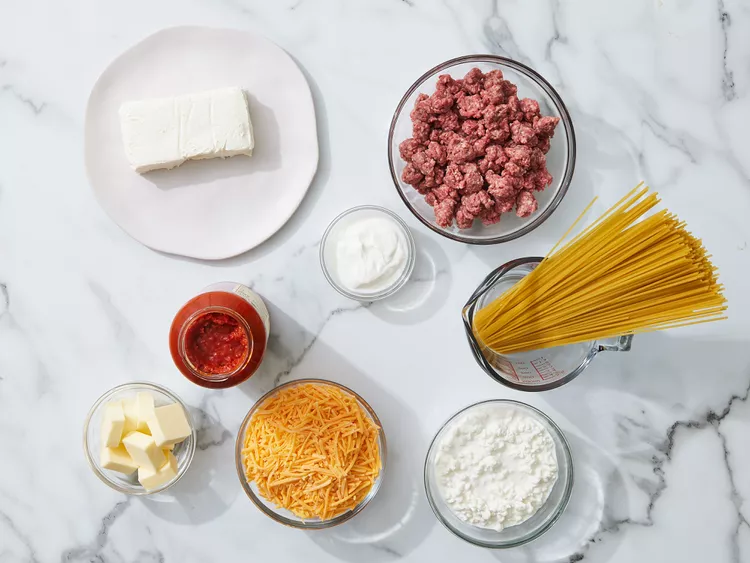
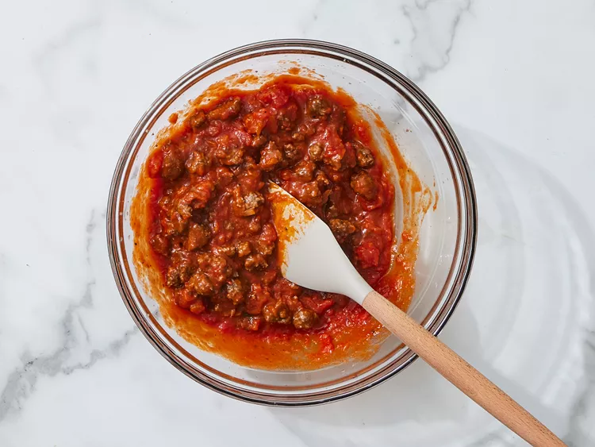
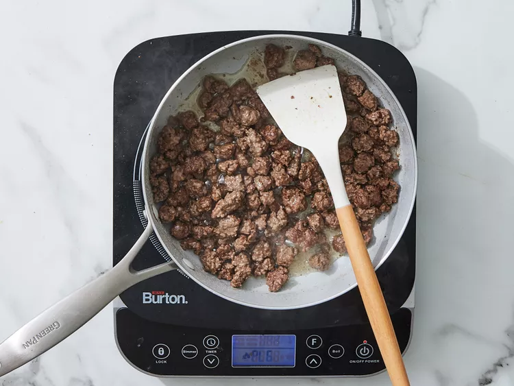
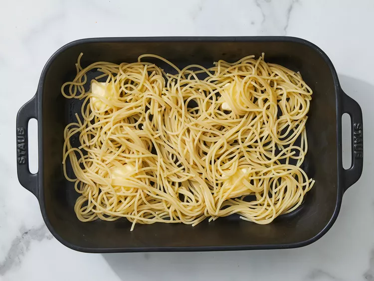
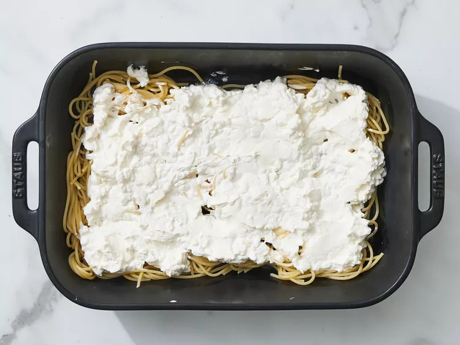
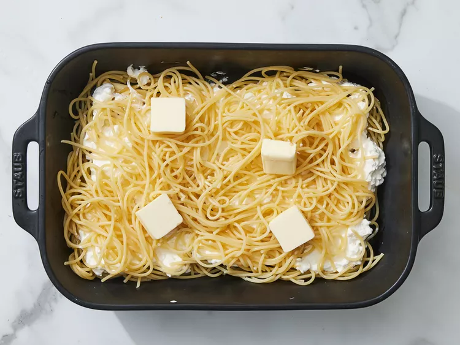
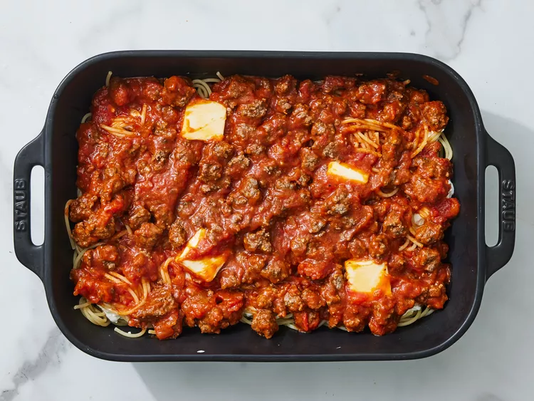

Million dollar spaghetti is the perfect combination of noodles, lean ground beef sauce, cottage cheese, cream cheese, and sour cream.
It's unbelievably good!
Ingredients
1 (8 ounce) package spaghetti
1 pound lean ground beef
1 (16 ounce) jar spaghetti sauce
½ cup butter, sliced - divided
1 (8 ounce) container cottage cheese
1 (8 ounce) package cream cheese, softened
¼ cup sour cream
1 (8 ounce) package shredded sharp Cheddar cheese
directions
Gather all ingredients and preheat the oven to 350 degrees F (175 degrees C).

Dotdash Meredith Food Studios
Bring a large pot of lightly salted water to a boil. Cook spaghetti in boiling water until cooked through but firm to the bite,
about 8 to 12 minutes. Drain.

Dotdash Meredith Food Studios
While the pasta is cooking, heat a large skillet over medium-high heat. Cook and stir beef in the hot skillet until browned and
crumbly, 5 to 7 minutes; drain and discard grease.

Dotdash Meredith Food Studios
Transfer to a bowl and mix in spaghetti sauce.
Dotdash Meredith Food Studios
Place 1/2 of the butter slices into the bottom of a 9x13-inch casserole dish. Spread 1/2 of the spaghetti into the dish.

Dotdash Meredith Food Studios
Mix cottage cheese, cream cheese, and sour cream together in a bowl; spread mixture over spaghetti.

Dotdash Meredith Food Studios
Cover with remaining spaghetti and top with remaining slices of butter.

Dotdash Meredith Food Studios
Pour ground beef mixture over spaghetti and spread in an even layer.

Dotdash Meredith Food Studios
Bake in the preheated oven for 30 minutes. Spread Cheddar cheese on top and continue baking until cheese has melted and is lightly
browned, about 15 minutes more.